We’re excited to announce the publication of the UCSF COVID-19 Response Web-Archive. UCSF has historically been a “first responder” to a wide variety of public health emergencies. At the outset of the COVID-19 pandemic, UCSF archivists recognized that the evolving UCSF response to the situation would contain valuable information about this important, tragic, and devastating historical moment, and that documenting that response as it grew and changed would be a powerful historical record. And we were able to act quickly, because so much of the record is on the web.
Archives and Special Collections has been archiving websites for a long time — our oldest captures date back to 2007, which feels like another epoch in web-time (you can see all of our web-archives here: https://archive-it.org/organizations/986). To archive the web, we use specialized tools to take “captures” or “snapshots” of a certain web-page at a certain time, usually coming back to take a new capture at regular intervals. Because of this technique, web-archives are a valuable way to watch any given website evolve and change, and this documents something like a rapidly-evolving response to a global pandemic very well.
The March 25, 2020 update of the AIDS Research Institute’s COVID-19 task force. Note that at this time there were only 76 confirmed COVID cases and no deaths.
In documenting the UCSF response to COVID-19 however, we had to work much more quickly and in much greater volume than we are used to. As you likely remember, during the height of the early days of the pandemic both the UCSF and the nationwide response was changing daily based on rapidly shifting information. Archives usually captures web-pages every 3 months or every 6 months, but upon embarking on this collection we realized that we needed to begin capturing certain websites every day. Additionally, UCSF has at any given time as many as 1000 different official websites (something with ucsf.edu at the base domain), so knowing which of these contained COVID information and should be captured was difficult. To remedy this problem, archivists set up GoogleAlerts to notify us anytime something was published to a ucsf.edu domain which mentioned certain key words identified as likely COVID-related.
And this was only the official UCSF websites. We also wanted to document outside coverage of UCSF activities, things that appeared on news websites, blogs, and occasionally social media (though the latter is persistently difficult to capture — download your Twitter archives people!). We were able to use GoogleAlerts in a similar way to help alert us to these sites, but even more importantly we benefited from the immense assistance of the amazing Anirvan Chatterjee, Director of Data Strategy at the Clinical & Translational Science Institute. Anirvan reached out to us early in the pandemic with a list of sites he had collected that contained documentation of UCSF’s role in the pandemic response, and his human-curated list was immensely helpful. The proliferation of digital information makes human curation and metadata creation increasingly difficult in archival repositories, and having someone like Anirvan who was able to devote the time to it (most digital archivist aren’t able to devote such time, if you can believe it!) really improved the collection.
This collection is also important because it can be both accessed by a human browsing and by a computer doing computational research. We plan to use these materials to expand our work in digital health humanities as well as collections as data as our newest colleague Kathryn Stine gets underway in her role coordinating these programs. Have a question about the COVID-19 web-archive collection? Want to use it in a computational project? Just love it? Get in touch!
Did I read that right, you may be wondering? A whole day for digital preservation? What on earth could that be for? Can’t we just ctrl+s and we’re good? Can’t we put things in the cloud and they’ll be there forever?
Well, you did read that right: it’s a whole day for digital preservation and it could use a whole lot more. Digital preservation takes a ton of work, and far from being a passive strategy it is an active process that continues for as long as a collection needs to be preserved. And who are we kidding, if you read our blog you probably already had an idea that this was the case, and didn’t even have any of those fake questions I tried to pose at the beginning.
On the first Monday in November we celebrate the people and the labor that goes into preserving our digital cultural, biological, medical, and general scientific heritage so that it can be accessed by future generations. For generations, archives and archivists have, intentionally or not, relied upon “benign neglect” — one of my favorite archival terms — for the preservation of many of our most valuable collections. “Benign neglect” refers to the fact that under decent climatic circumstances, many physical media — printed photos, printed documents, books, etc. — can be forgotten by their owner in a closet for 20, 50, or even 100 years and still be relatively fine, ready for an archivist to come, clean things up, document the order, and accession them right on into our collections.
Unfortunately, things don’t work this way for our digital heritage. Think about something you created on a computer 20 years ago. If you even had your own computer at that point, does that computer still run? Is that file format you were using even open-able by a computer today? (Anyone here use LotusNotes?) You were probably saving things on floppy disks back then, do you know anyone with a computer that has a floppy drive? (We have one, let us know if you want to use it!)
In addition to all those questions above, there is the danger of “bit-rot”, or the corruption of individual pieces of the data that make up a file due to the physical aging of the storage media. Floppy disks and CDs are all various forms of plastic, and you may notice that anything plastic tends to get a little less lustrous after 20 years of sitting in your desk. There’s also the tricky interaction with corporate intellectual property that dictates much of how we live our digital lives. In many cases, that file format you used to save your work is actually owned by some company, and if they decide they don’t want to keep it around anymore, then you’re out of luck.
If it’s not clear already, digital preservation is a very active process that is essential if we are to be able to access our digital heritage going forward. When we bring in new “born-digital” collections in the Archives, we have to start by stabilizing the files — removing them from their carrier media, documenting brief technical metadata about them so that we can be sure they haven’t become corrupted while we move them around, and prepping them to be easily migrated to more readable file formats if necessary. But it doesn’t stop there. Once things have been stabilized, they still need to be maintained in a digital preservation repository for as long as we intend to preserve them. Digital preservation repositories do things like check for file corruption, backup files in multiple geographic locations, and migrate files that are at risk of becoming un-readable or out-of-date to new file formats which are open and widely readable. This is all work that will need to be done for the entire preservation lifetime of the files.
As you can see, this is all a lot of work! That’s why we’re excited to take today to celebrate the people, the systems, and labor that go into preserving our digital heritage, and making it accessible to all of us long into the future.
This week’s story comes from Isabella Durgin, third-year English and geography student at the University of California, Los Angeles (UCLA).
Post byIsabella Durgin:
Human connection can break the space-time continuum.
This summer, I worked with the UCSF Archives and Special Collections department to help the digital archiving of the COVID Tracking Project (CTP), a cohort of volunteers that worked under The Atlantic to document and report on the first year of the COVID-19 pandemic. As the Project came to a close in 2021, they also began to tell their story – and that was where I came in. Along with the team, my work at UCSF ultimately spun a layered tale of interconnectedness.
As a Digital Archive Intern, I was primarily responsible for the organization and curation of the Oral History Archive component of the broader CTP Archive. These files were the product of CTP’s internal interviews to break down and reflect on the work of volunteers and staff. Interviews occurred across a large period of time, spanning from the winddown of the Project in spring 2021 to several months later, when the gears had pretty much ground to a halt.
Many interviews allocated a significant portion of time to discuss the community they had found during the first 365 days of the pandemic – March 7, 2020 to March 7, 2021 – during which CTP was producing publicly available data and information.
The people at CTP built an organization to handle an extremely unfamiliar crisis with fairly unfamiliar tools – now virtual workplace darlings like Zoom and Slack. Nevertheless, a thriving hive was built up bit by bit (and byte by byte), founded on prioritizing volunteers as humans and crafting a new language of custom emoji.
And somehow, by the end of the summer, I felt like I had a place in it as well.
Without speaking to any of these people or bonding by synchronistically living through the same pandemic moments, I still had the same experience of feeling like part of something bigger. Which, in some ways, was the hope – the longstanding one, anyways – for the Oral Histories. One of the intentions was for others to learn from CTP’s approach and use the model in other contexts in order to build more compassionate and sustainable communities.
Around a year after CTP’s 2021 conversations about the year prior, I was able to tap into the web of people and relationships. The same can be done with the thousands of other files in the CTP Archive; there is the same potential for different fields to learn from the stories told by the outreach efforts or the data journalism. Even the numbers tell a story. We just have to be ready to preserve and to listen – actions I learned are far more similar than one may think.
The 18th International Conference on Digital Preservation (iPRES) took place from September 12-16, 2022, in Glasgow, Scotland. First convened in 2004 in Beijing, iPRES has been held on four different continents and aims to embrace “a variety of topics in digital preservation – from strategy to implementation, and from international and regional initiatives to small organisations.” Key values are inclusive dialogue and cooperative goals, which were very much centered in Glasgow thanks to the goodwill of the attendees, the conference code of conduct, and the significant efforts of the remarkable Digital Preservation Coalition (DPC), the iPRES 2022 organizational host.
I attended the conference in my role as the UCSF Industry Documents Library’s managing archivist to gain a better understanding of how other institutions are managing and preserving their rapidly-growing digital collections. For me and for many of the delegates, iPRES 2022 was the first opportunity since the COVID pandemic began to join an in-person conference for professional conversation and exchange. It will come as no surprise to say that gathering together was incredibly valuable and enjoyable (in no small part thanks to the traditional Scottish ceilidh dance which took place at the conference dinner!) The Program Committee also did a fantastic job designing an inclusive online experience for virtual attendees, with livestreamed talks, online social events, and collaborative session notes.
Session themes focused on Community, Environment, Innovation, Resilience, and Exchange. Keynotes were delivered by Amina Shah, the National Librarian of Scotland; Tamar Evangelestia-Dougherty, the inaugural director of the Smithsonian Libraries and Archives; and Steven Gonzalez Monserrate, an ethnographer of data centers and PhD Candidate in the History, Anthropology, Science, Technology & Society (HASTS) program at the Massachusetts Institute of Technology.
Every session I attended was excellent, informative, and thought-provoking. To highlight just a few:
Amina Shah’s keynote “Video Killed the Radio Star: Preserving a Nation’s Memory” (featuring the official 1980 music video by the Buggles!) focused on keeping up with the pace of change at the National Library of Scotland by engaging with new formats, new audiences, and new uses for collections. She noted that “expressing value in a key part of resilience” and that the cultural heritage community needs to talk about “why we’re doing digital preservation, not just how.” This was underscored by her description of our world as a place where the truth is under attack, that capturing the truth and finding a way to present it is crucial, and that it is also crucial that this work be done by people who aren’t trying to make a profit from it.
“Green Goes with Anything: Decreasing Environmental Impact of Digital Libraries at Virginia Tech,” a long paper presented by Alex Kinnaman as part of the wholly excellent Environment 1 session, examined existing digital library practices at Virginia Tech University Libraries, and explored changes in documentation and practice that will foster a more environmentally sustainable collections platform. These changes include choosing the least-energy consumptive hash algorithms (MD4 and MD5) for file fixity checks; choosing cloud storage providers based on their environmental practices; including environmental impact of a digital collection as part of appraisal criteria; and several other practical and actionable recommendations.
The Innovation 2 session included two short papers (by Pierre-yves Burgi, and by Euan Cochrane) and a fascinatingly futuristic panel discussion posing the question “Will DNA Form the Fabric of our Digital Preservation Storage?” (Also special mention to the Resilience 1 session which presented proposed solutions for preserving records of nuclear decommissioning and nuclear waste storage for the very long term – 10,000 years!)
Tamar Evangelestia-Dougherty’s keynote Digital Ties That Bind: Effectively Engaging With Communities For Equitable Digital Preservation Ecosystemswas an electric presentation that called unequivocally for centering equity and inclusion within our digital ecosystems, and for recognizing, respecting, and making space for the knowledge and contributions of community archivists. She called out common missteps in digital preservation outreach to communities, and challenged all those listening to “get more people in the room” to include non-white, non-Western perspectives.
“’…provide a lasting legacy for Glasgow and the nation’: Two years of transferring Scottish Cabinet records to National Records of Scotland,” a short paper by Garth Stewart in the Innovation 4 session, touched on a number of challenges very familiar to the UCSF Industry Documents Library team! These included the transfer of a huge volume of recent and potentially sensitive digital documents, in redacted and unredacted form; a need to provide online access as quickly as possible; serving the needs of two major access audiences – the press, and the public; normalizing files to PDF in order to present them online; and dealing with incomplete or missing files.
After the conference I also had the opportunity to visit the Archives of the Royal College of Physicians and Surgeons of Glasgow, where our tour group was welcomed by the expert library staff and shown several fascinating items from their collections, including an 18th century Book of Herbal Remedies (which has been digitized for online access).
After five collaborative and collegial days in Glasgow, I’m looking forward to bringing these ideas back to our work with digital archival collections here at UCSF. Many thanks to iPRES, the DPC, the Program Committee, the speakers and presenters, and all the delegates for building this wonderful community for digital preservation!
An 18th-century Book of Herbal Remedies on display at the Archives of the Royal College of Physicians and Surgeons of Glasgow
Participants at the first workshop for the No More Silence project
For the last 3 years, UCSF Archives and Special Collections has been working to provide access our archival collections documenting the lived experience of the HIV/AIDS epidemic “as data.” That last part — “as data” — can be admittedly opaque. Is it not all data? Are all the digitized collections we post to Calisphere and elsewhere not “data” already? What we mean when we say this is that we are providing access to the collections, and their accompanying metadata, in bulk as one download. We’ve been talking about this work as the “No More Silence project.”
We’re excited to announce that this work now has a public home on our website, and that you can access almost all of the various outputs of this project in one single location — even better than a convenience store! That location is here: https://www.library.ucsf.edu/archives/aids/data-projects/.
One of the exciting things about the No More Silence project was the way it started with the goal to provide access to the collections as data, but quickly grew to include community building and teaching around this newly-created data resource. The naivete of our “build it and they will come” approach is something that deserves an entire blog post of its own, but the point here is that there were classes, webinars, and computer code that all ended up coming out of this project. We’re excited to be able to make all of those things available to whoever wants to use them as well.
In addition, this project benefitted immensely from the partnerships we were able to undertake with people outside of the UCSF Campus community as well. It’s especially important to thank Dr. Clair Kronk, postdoctoral fellow in medical informatics at the Yale University School of Medicine and creator of the Gender, Sex, and Sexual Orientation Ontology, and Krü Maekdo, founder of the Black Lesbian Archives.
Check it all out here: https://www.library.ucsf.edu/archives/aids/data-projects/
This project was supported in part by the U.S. Institute of Museum and Library Services under the provisions of the Library Services and Technology Act, administered in California by the State Librarian. The opinions expressed herein do not necessarily reflect the position or policy of the U.S. Institute of Museum and Library Services or the California State Library, and no official endorsement by the U.S. Institute of Museum and Library Services or the California State Library should be inferred.
This is a guest post from Lubov McKone, the Industry Documents Library’s 2022 Data Science Senior Fellow.
This summer, I served as the Industry Documents Library’s Senior Data Science Fellow. A bit about me – I’m currently pursuing my MLIS at Pratt Institute with a focus in research and data, and I’m hoping to work in library data services after I graduate. I was drawn to this opportunity because I wanted to learn how libraries are using data-related techniques and technologies in practice – and specifically, how they are contextualizing these for researchers.
Project Background
The UCSF Industry Documents Library is a vast collection of resources encompassing documents, images, videos, and recordings. These materials can be studied individually, but increasingly, researchers are interested in examining trends across whole collections, or subsets of it. In this way, the Industry Documents Library is also a trove of data that can be used to uncover trends and patterns in the history of industries impacting public health. In this project, the Industry Documents Library wanted to investigate what information is lost or changed when its collections are transformed into data.
There are many ways to generate data from digital collections. In this project we focused on a combination of collections metadata and computer-generated transcripts of video files. Like all information, data is not objective but constructed. Metadata is usually entered manually and is subject to human error. Video transcripts generated by computer programs are never 100% accurate. If accuracy varies based on factors such as the age of the video or the type of event being recorded, how might this impact conclusions drawn by researchers who are treating all video transcriptions as equally accurate? What guidance can the library provide to prevent researchers from drawing inaccurate conclusions from computer-generated text?
Project Team
Kate Tasker, Industry Documents Library Managing Archivist
Rebecca Tang, Industry Documents Library Applications Programmer
Geoffrey Boushey, Data Science Initiative Application Developer and Instructor
Lubov McKone, Senior Data Science Fellow
Lianne De Leon, Junior Data Science Fellow
Rogelio Murillo, Junior Data Science Fellow
Project Summary
Research Questions
Based on the background and the goals of the Industry Documents Library, the project team identified the following research questions to guide the project:
Taking into account factors such as year and runtime, how does computer transcription accuracy differ between television commercials and court proceedings?
How might transcription accuracy impact the conclusions drawn from the data?
What guidance can we give to researchers to prevent uninformed conclusions?
Uses
This project is a case study that evaluates the accuracy of computer-generated transcripts for videos within the Industry Documents Library’s Tobacco Collection. These findings provide a foundation for UCSF’s Industry Documents Library to create guidelines for researchers using video transcripts for text analysis. This case study also acts as a roadmap and a collection of instructional materials for similar studies to be conducted on other collections. These materials have been gathered in a public github repo, viewable here.
Sourcing the Right Data
At the beginning of the project, we worked with the Junior Fellows to determine the scope of the project. The tobacco video collection contains 5,249 videos that encompass interviews, commercials, court proceedings, press conferences, news broadcasts, and more. We wanted to narrow our scope to two categories that would illustrate potential disparities in transcript accuracy and meaning. After transcribing several videos by hand, the fellows proposed commercials and court proceedings as two categories that would suit our analysis. We felt 40 would be a reasonable sample size of videos to study, so each fellow selected 10 videos from each category, selecting videos with a range of years, quality, and runtimes. The fellows were selecting videos from a list that was generated by the InternetArchive python API, containing video links and metadata such as year and runtime.
Computer & Human Transcripts
Once the 40 videos were selected, we extracted transcripts from each URL using the Google AutoML API for transcription. We saved a copy of each computer transcription to use for the analysis, and provided another copy to the Junior Fellows, who edited them to accurately reflect the audio in the videos. We saved these copies as well for comparison to the computer-generated transcription.
Comparing Transcripts
To compare the computer and human transcripts, we conducted research on common metrics for transcript comparison. We came up with two broad categories to compare – accuracy and meaning.
To compare accuracy, we used the following metrics:
Word Error Rate – a measure of how many insertions, deletions, and substitutions are needed to convert the computer-generated transcript into the reference transcript. We subtracted this number from 1 to get the Word Accuracy Rate (WAR).
BLEU score – a more advanced algorithm measuring n-gram matches between the transcripts, normalized for n-gram frequency.
Human-evaluated accuracy – a score from Poor, Fair, Good, and Excellent assigned by the fellows as they were editing the computer-generated transcripts.
Google AutoML confidence score – a score generated by Google AutoML during transcript generation indicating how accurate Google believes its transcription to be.
To compare meaning, we used the following metrics:
Sentiment – We generated sentiment scores and magnitude for both sets of transcripts. We wanted to see whether the computer transcripts were under- or over- estimating sentiment, and whether this differed across categories.
Topic modeling – We ran a k-means topic model for two categories to see how closely the computer transcripts matched the pre-determined categories vs. how closely they were matched by the human transcripts
Findings & Recommendations
Relationships in the data
From an initial review of the significant correlations in the data, we gained some interesting insights. As shown in the correlation matrix, AutoML confidence score, fellow accuracy rating, and Word Accuracy Rate (WAR) are all significantly positively correlated. This means that the AutoML confidence score is a relatively good proxy for transcript accuracy. We recommend that researchers who are seeking to use computer-generated transcripts look to the AutoML confidence score to get a sense of the reliability of the computer-generated text they are working with.
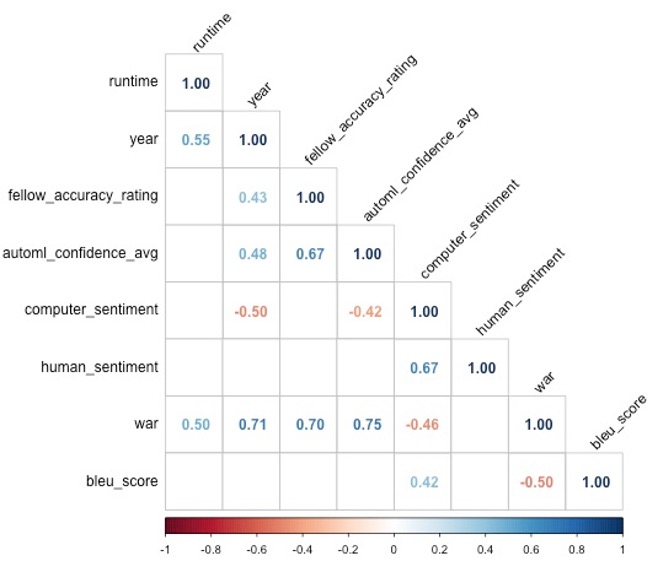Correlation matrix showing that AutoML confidence score, fellow accuracy rating, and Word Accuracy Rate (WAR) are all significantly positively correlated
We also found a significant positive correlation between year and fellow accuracy rating, Word Accuracy Rate, and AutoML confidence score – suggesting that the more recent the video, the better the quality. We suggest informing researchers that newer videos may generate more accurate computer transcriptions.
Transcript accuracy over time
One of the Junior Fellows suggested that we look into whether there is a specific cutoff year where transcripts become more accurate. As shown in the visual below, there’s a general improvement in transcription quality after the 1960s, but not a dramatic one. Interestingly, this trend disappears when looking at each video type separately.
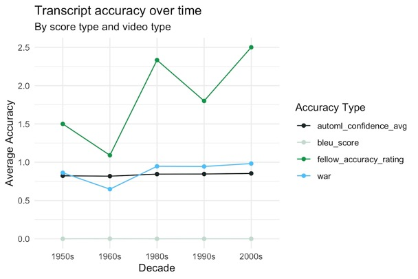Line graph showing transcript accuracy over time for all video types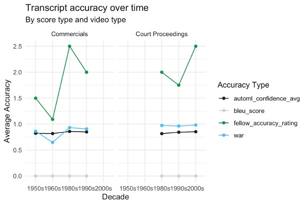Line graph showing transcript accuracy over time, separated into two categories: commercials and court proceedings
Transcript accuracy by video type
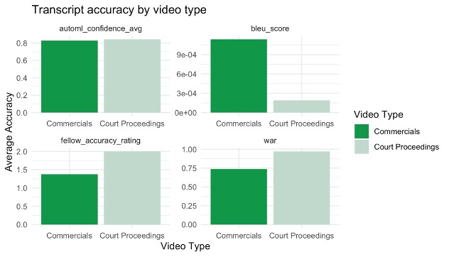Bar graphs showing transcript accuracy by video type (commercials and court proceedings) according to four ratings: AutoML Confidence Average; Bleu Score; Fellow Accuracy Rating; and Word Accuracy Rate (WAR)
When comparing transcript accuracy between the two categories, we found that our expectations were challenged. We expected the accuracy of the advertising video transcripts to be higher, because advertisements generally have a higher production quality, and are less likely to have features like multiple people speaking over each other that could hinder transcription accuracy. However, we found that across most metrics, the court proceeding transcripts were more accurate. One potential reason for this is that commercials typically include some form of singing or more stylized speaking, which Google AutoML had trouble transcribing. We recommend informing researchers that video transcripts from media that contain singing or stylized speaking may be less accurate.
The one metric that the commercials were more accurate in was BLEU score, but this should be interpreted with caution. BLEU score is supposed to range from 0-1, but in our dataset its range was 0.0001 – 0.007. BLEU score is meant to be used on a corpus that is broken into sentences, because it works by aggregating n-gram accuracy on a sentence level, and then averaging the sentence-level accuracies across the corpus. However, the transcripts generated by Google AutoML did not contain any punctuation, so we were essentially calculating BLEU score on a corpus-length sentence for each transcript. This resulted in extremely small BLEU scores that may not be accurate or interpretable. For this reason, we don’t recommend the use of the BLEU score metric on transcripts generated by Google AutoML, or on other computer-generated transcripts that lack punctuation.
Transcript sentiment
We looked to sentiment scores to evaluate differences in meaning between the test and reference transcripts. As we expected, commercials, which are sponsored by the companies profiting off of the tobacco industry, tend to have a positive sentiment, while court proceedings, which tend to be brought against these companies, tend to have a negative sentiment. As shown in the plot to the left, the sentiment of the computer transcripts was a slight underestimation in both video types, though this was not too dramatic of an underestimation.
Graph comparing average sentiment scores from computer and human transcriptions of commercials and court proceedings
Opportunities for Further Research
Throughout this project, it was important to me to document my work and generate a research dataset that could be used by others interested in extended this work beyond my fellowship. There were many questions that we didn’t get a chance to investigate over the course of this summer, but my hope is that the work can be built upon – maybe even by a future fellow! This dataset lives in the project’s github repository under data/final_dataset.csv.
One aspect of the data that we did not investigate as much as we had hoped was topic modeling. This will likely be an important next step in assessing whether transcript meaning varies between the test and reference transcripts.
Professional Learnings & Insights
My main area of interest in the field of library data services is critical data literacy – how we as librarians can use conversations around data to build relationships and educate researchers about how data-related tools and technologies are not objective, but subject to the same pitfalls and biases as other research methods. Through my work as the Industry Documents Library Senior Data Science Fellow, I had the opportunity to work with a thoughtful team who is thinking ahead about how to responsibly guide researchers in the use of data.
Before this fellowship, I wasn’t sure exactly how opportunities to educate researchers around data would come up in a real library setting. Because I previously worked for the government, I tended to imagine researchers sourcing data from government open data portals such as NYCOpenData, or other public data sources. This fellowship opened my eyes to how often researchers might be using library collections themselves as data, and to the unique challenges and opportunities that can arise when contextualizing this “internal” data for researchers. As the collecting institution, you might have more information about why data is structured the way it is – for instance, the Industry Documents Library created the taxonomy for the archive’s “Topic” field. However, you are also often relying on hosting systems that you don’t have full control over. In the case of this project, there were several quirks of the Internet Archive API that made data analysis more complicated – for example, the video names and identifiers don’t always match. I can see how researchers might be confused about what the library does and does not have control over.
Another great aspect of this fellowship was the opportunity to work with our high school Junior Fellows, who were both exceptional to work with. Not only did they contribute the foundational work of editing our computer-generated transcripts – tedious and detail-oriented work – they also had really fresh insights about what we should analyze and what we should consider about the data. It was a highlight to support them and learn from them.
I also appreciated the opportunity to work with this very unique and important collection. Seeing the breadth of what is contained in the Industry Documents Library opened my eyes to not only the wealth of government information that exists outside of government entities, but also to the range of private sector information that ought to be accessible to the public. It’s amazing that an archive like the Industry Documents Library is also so invested in thinking critically about the technical tools that it’s reliant upon, but I guess it’s not such a surprise! Thanks to the whole team and to UCSF for a great summer fellowship experience!
We are at the one-year point of the project Pioneering Child Studies: Digitizing and Providing Access to Collection of Women Physicians who Spearheaded Behavioral and Developmental Pediatrics. UCSF Archives and Special Collections and UC Merced have made significant headway towards our goal of digitizing and publishing 68,000 pages from the collections of Drs. Hulda Evelyn Thelander, Helen Fahl Gofman, Selma Fraiberg, Leona Mayer Bayer, and Ms. Carol Hardgrove.
To date we have digitized over 33,000 pages. The digitized material are still undergoing quality assurance (QA) procedures. Here are some items we have digitized so far.
Dr. Leona Mayer Bayer
This collection features professional correspondence of Dr. Leona Mayer Bayer. Her work focused on child development and human growth and psychology of sick children.
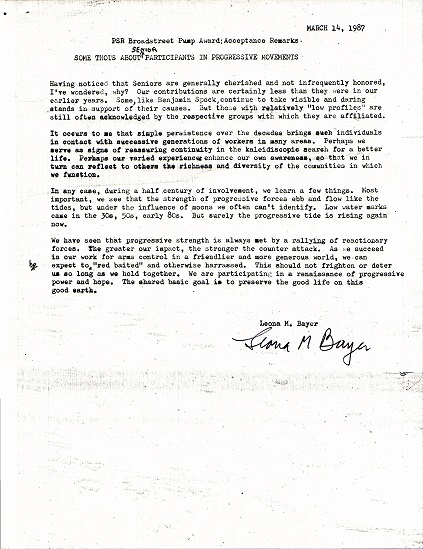MSS 86-54, Leona Mayer Bayer Correspondence, Carton 1, Folder 9, PSR Award acceptance speech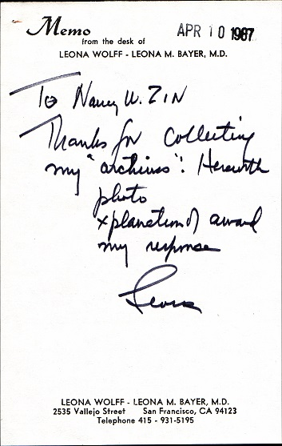MSS 86-54, Leona Mayer Bayer Correspondence, Carton 1, Folder 9, Memo thanking Nancy W. Zin for collecting her archive
Dr. Selma Horwitz Fraiberg
This collection includes several drafts of her research papers on important aspects of developmental-behavioral pediatrics.
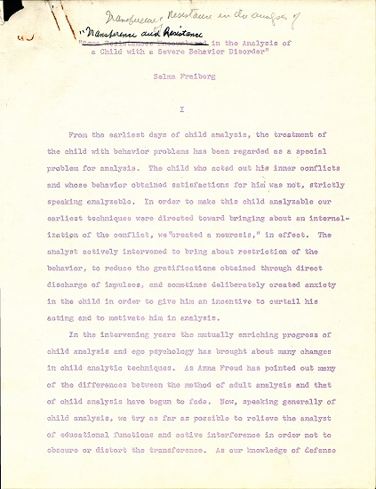MSS 83-9, Selma Fraiberg Papers, Carton 14, Folder 8, draft of “Transference and Resistance in the Analysis of a Child with a Severe Behavior Disorder” 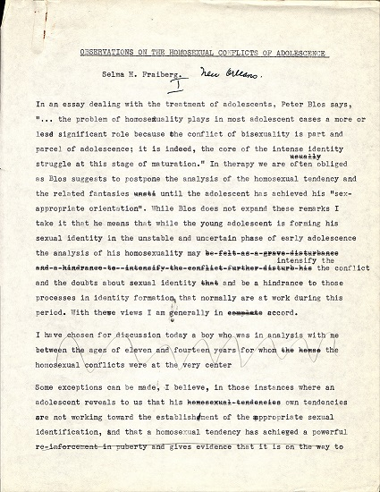MSS 83-9, Selma Fraiberg Papers, Carton 14, Folder 6, draft of “Observations On The Homosexual Conflicts of Adolescence”
In the next year we will continue digitizing and will soon publish our collections on Calisphere. Stay tuned for our next update.
The COVID Tracking Project Archive has several unique challenges, namely how to preserve unique, born-digital materials in formats that will be easily accessible to researchers far in the future. Tools like Twitter, Instagram, and Slack are constantly changing their interfaces, making preservation difficult.
To make the job of the archive and other archivists easier, the COVID Tracking Project is releasing several tools we have developed to preserve these digital formats on our Github Organization. These include:
Twitter Preserver – A tool to convert the downloaded Zip file a user gets from Twitter into stable HTML files. This includes Direct Messages as well as public Tweets and Favorites. View a preview of the output of this tool.
XLSX Bulk Converted – A python script that will bulk-convert Excel files into folders of CSV files, one file per worksheet.
Instagram Preserver — A tool that logs into Instagram and downloads all the feed data and images from another account. Instagram is particularly difficult to access without logging in, so this tool uses an internal API to access the user’s feed.
We believe these kind of tools provide a model of how to preserve and protect information from proprietary and sometimes fleeting platforms for future researchers.
Support for development came from the Alfred P. Sloan Foundation.
Donated by her husband, Dennis Hirschfelder, the Arlene Hirschfelder Collection was accessioned into the UCSF Archives and Special Collections this year. Arlene Hirschfelder was an educator and scholar who authored numerous books and other resource materials on tobacco control specifically as it relates to teenagers and young adults. She passed away in 2021.
The collection contains tobacco control resource materials that Hirschfelder authored such as A Century of Tobacco & Smoking (1998) which chronicles US tobacco history from the 1870s to 1990s with a focus on the marketing strategies of the tobacco industry.
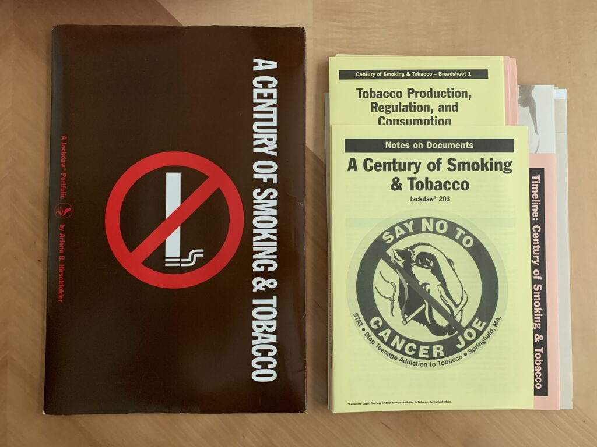
The collection also includes materials that she assembled such as an anti-smoking board game, posters, cigarettes, candy cigarettes, and other ephemera.
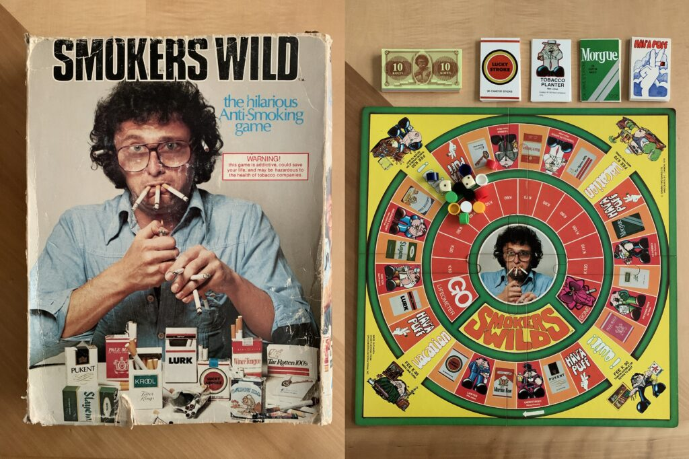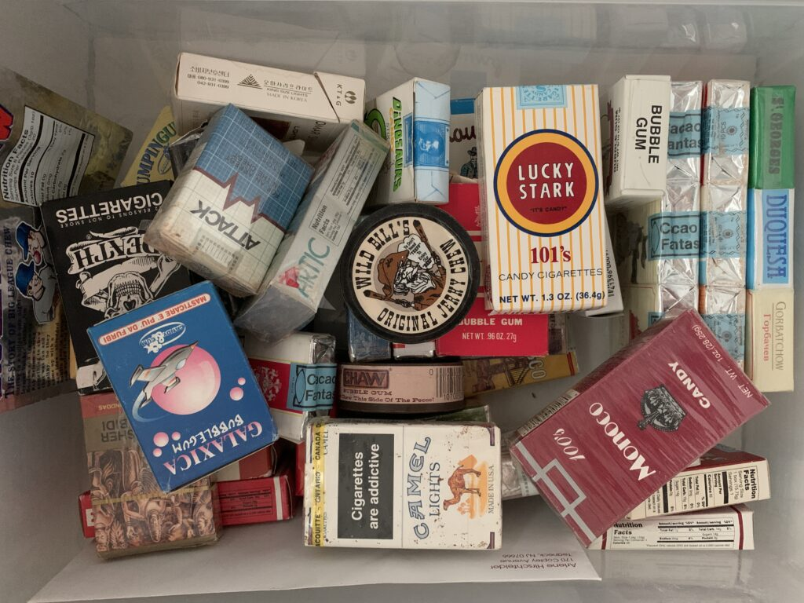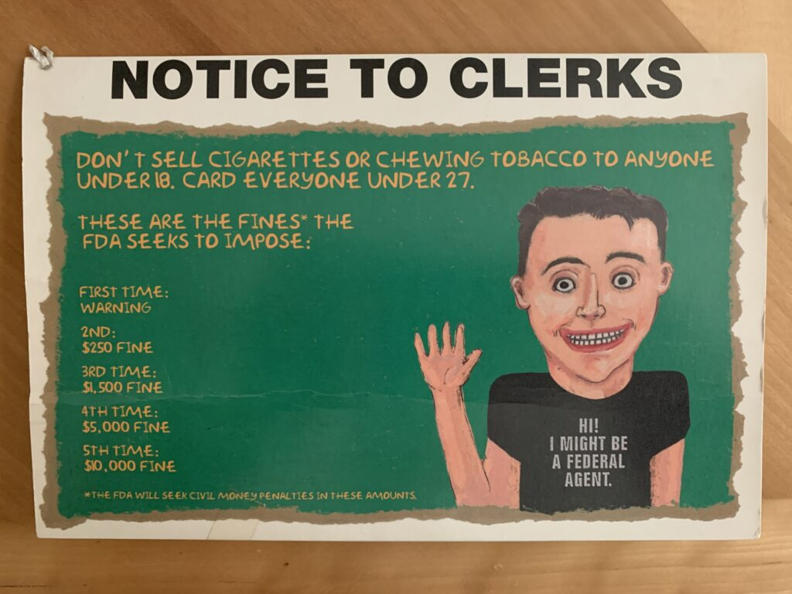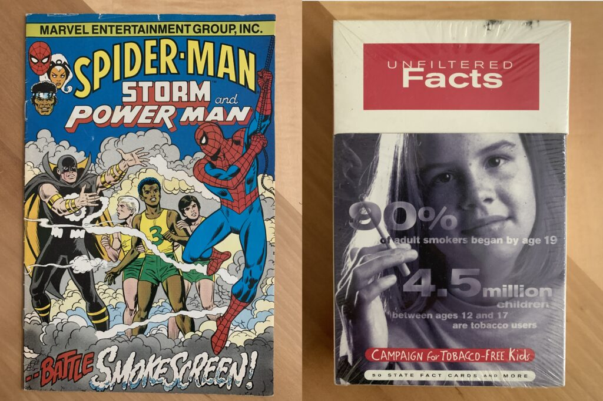
Hirschfelder was also a Native American studies scholar and advocate. Her book collection of Native American and Indigenous subject matters was donated to Northwestern University’s Center for Native American & Indigenous Research (CNAIR).
After a four-year break, last semester the archives team hosted a History of Health Sciences course, the Anatomy of an Archive. This course was developed and co-taught by the Department of Humanities and Social Sciences Associate Professor, Aimee Medeiros and Associate University Librarian for Collections and UCSF Archivist, Polina Ilieva. Charlie Macquarie, Digital Archivist, facilitated the discussion on Digital Projects. Polina, Peggy Tran-Le, Research and Technical Services Managing Archivist, and Edith Escobedo, Processing Archivist, served as mentors for students’ processing projects throughout the duration of the course.
The goal of this course was to provide an overview of archival science with an emphasis on the theory, methodology, technologies and best practices of archival research, arrangement and description. The archivists put together a list of collections requiring processing and also corresponding to students’ research interests and each student selected one that they worked on with their mentor to arrange and create a finding aid. During this 11-week hybrid course students developed competencies related to researching and describing archival collections, as well as interpreting the historical record. At the conclusion of this course students wrote a story about their experiences highlighting collections they processed. In the next few weeks, we will be sharing these stories with you.
This week’s story comes from Alexzandria Simon, PhD student, UCSF Department of History & Social Sciences.
Post by Alexzandria Simon:
Having never stepped into any kind of archival space or discussion, I was excited to engage with, learn about, and understand what the archives are and mean. Now, after working with Polina Ilieva and Aimee Medeiros, at UCSF, I realize all the intricacies, time, and special attention that goes into the archival collection process. There are practices and standards that guide researchers and archivists, and emotions and ethics play a role in shaping collections and entire archives. The journey of processing a collection is time consuming, interdisciplinary, and sometimes messy. However, the craft of processing a collection allows individuals to discover new characters, information, and stories that take place during a different time and space.
When I saw my collection for the first time, all I could think to myself was how small the collection is. I was surprised after seeing others, some that consisted of 5 boxes worth of documents, that the one I was planning to work on could be confined to one file. I could not begin to comprehend how the file could tell such a large story. I began flipping through all the documents, photographs, and pamphlets and skimming through the letters and correspondence trying to put all the pieces together. The file had no organizational layout, and so my priority was to put everything in chronological order. I wanted to understand the starting point and the ending point. What I came to discover is that sometimes, collections do not always have a solid beginning and concluding aspect. Stories sometimes begin right in the middle and then end abruptly, leaving many questions.
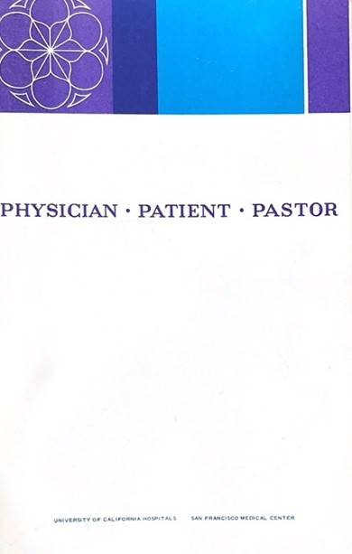
Figure 1: “Physician – Patient – Pastor” Pamphlet, San Francisco Medical Center, May 1961, Chaplaincy Services at UCSF, MSS 22-03.
The Chaplaincy Services at UCSF Collection began with correspondence between UCSF administrators interested in starting a chaplaincy program. They sought to understand how chaplains, priests, and rabbis could have a role in their hospital space and provide services to patients. What they came to learn and understand, from informational pamphlets, is the connection between chaplains and patients is a powerful one. Chaplains offer judgement free support and a space for patient’s belief and repent needs. When a patient is alone with no family members or loved ones, they can call upon their religion to give them a person of guidance and care.
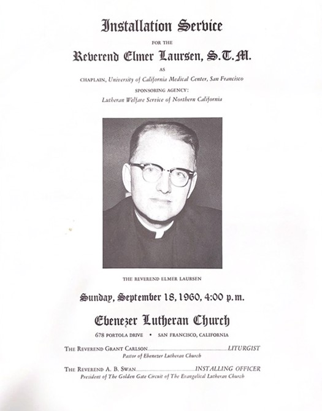
Figure 2: Installation Service Program for Reverend Elmer Laursen, S.T.M., Lutheran Welfare Service of Northern California, September 18, 1960, Chaplaincy Services at UCSF, MSS 22-03.
These discussions would ultimately lead to the establishment of a Clinical Pastoral Education Program initiated and headed by Reverend Elmer Laursen, S.T.M. Reverend Laursen was a prominent figure in the Chaplaincy Services at UCSF and established clinical pastoral work as necessary for patient care. Reverend Laursen engaged in public outreach, fundraising, patient and student advocacy, and building relationships with other colleges and hospitals. His work inspired other pastors, reverends, and religious officials to begin implementing clinical pastoral education programs to develop student learning and patient care. He believed that pastoral care is imperative to patient care. Patients deal with challenging, and sometimes traumatizing and scary, medical procedures. The Chaplaincy Program could offer solitude and peace for patients who have no one else to call on. Chaplaincy Programs offer a humanistic approach to patient care in a field that is saturated with data, clinicians, and the medical unknown.
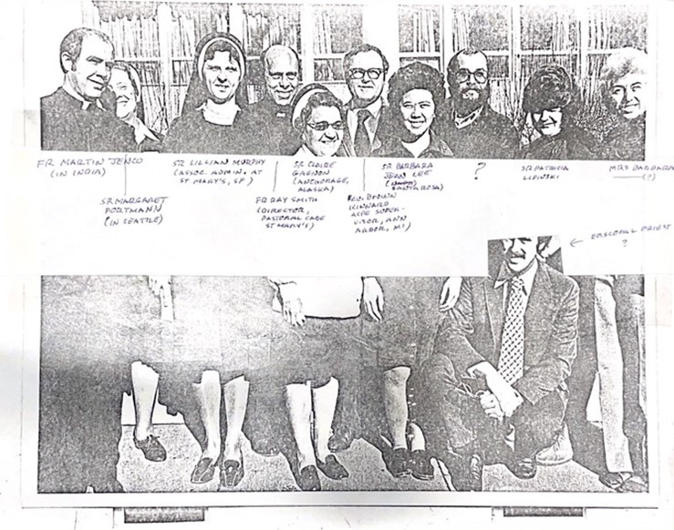
Figure 3: Group Photo of Chaplains, Reverends, Nuns, and Administrators at the 21st Anniversary Celebration of Chaplaincy Training Event, September 1982, Chaplaincy Services at UCSF, MSS 22-03.
After reading through the collection, I began dividing the documents into subject folders. These consisted of “Chaplaincy Service Materials,” “Pamphlets & Booklets,” “Funding,” “Chaplaincy Facility Space,” “Chaplain Elmer Laursen,” “Correspondence – August 1959 – September 1974,” “Photographs,” “21st Anniversary Celebration,” and “Rabbi Services.” Through these folders, the collection is now organized in a way researchers and others can trace the narrative. While I was processing the collection, I kept reminding myself to make the finding aid easy and accessible. I want anyone, scholar or not, to be able to open the finding aid or file and know what the collection includes. It is difficult to not let the records overwhelm you with tiny details. It is difficult to not get lost in every aspect of a collection. I found gaps in the correspondence, and every time I read something new, I seemed to come up with more questions. However, I believe that to be a part of the journey and work of archivists and scholars. We are always left wanting more. The documents in the collection are only a portion of the much larger story around Chaplaincy Services at UCSF. Even more miniscule in the larger history around religion and hospitals.